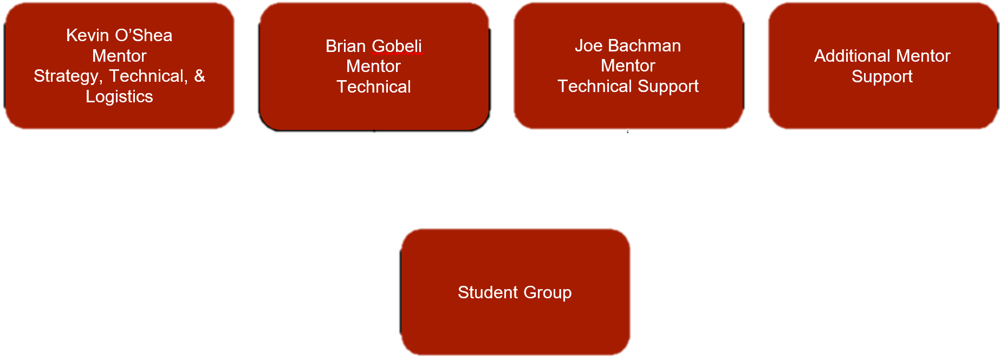

The team is organized into three technical sub-teams and three management sub-teams, each with at least one students leader and one mentor. The technical sub-teams are in charge of designing, powering, and programming the robot whereas the business sub-teams are in charge of all team logistics. The tasks assigned to the management sub-teams include: logistics and outreach, finding and communicating with sponsors, scheduling, preparing all award submissions and presentations, completing the bill of materials, and handling all purchases and finances. The professional volunteers fulfill the roles of Team Lead Mentor, Lead Technical Mentor, and Lead Management Mentor. These roles oversee team administration and travel, the development of the robot, finances, and purchases. Prior to the build season, stidents fill out forms nominating themselves for leadership positions. These students are interviewed by the mentors and the mentors choose the students who they believe would best fill these leadership positions.
The team organization is one that relies on various support structures that will help the students to obtain the most out of the provided curriculum. Both items go hand in hand for assisting the progression of the students individual skills. Image below shows the past organizational chart for the team and how the structure is compromised.
The organizational chart above shows the past scenario that has been observed on the RoboWarriors. Kevin, Brian, and other additional mentor support are solely responsible for all students that attend the events and also during build season. The structure is feasible but will likely not result in full student individual success over the course of the program. This is due to the required attention to all aspects of the program required by the mentors above.
Responsible for leading the appointed specialized section of their subteam. Required to engage and collaborate with all students to help complete the goals that were set for that portion of the season. The Technical Subteam is divided into Mechanical Design, Electrical, and Programming. The Management Subteam is divided into Logistics, Business, and Strategy.
The Lead Technical Mentor and Lead Management Mentor are restricted to only holding a single Lead Mentor position amongst the divided subteams of the RoboWarriors. However, the Lead Team Mentor may not be restricted to only that position. They may hold the Lead Technical Mentor or Lead Management Mentor position as well.
One student may not hold two Student Leader positions on separate subteam divisions. Additionally, the Team Technical Captain and the Team Management Captain are not capable of holding a separate subteam Student Leader Position.
This current structure is similar to many successful teams that are currently competing and that have in the past. While the above structure is defined as such above, it may shift due to student participation and resources available.
Responsible for upholding their role assigned during a specific time at the competition. All students placed on rotation are required to learn all aspects of the team during competition in order to fill future positions. While students are not in their specific rotation slot, they will be allowed to visit other locations at the competition to engage more with other teams or learn more about what’s offered through FIRST.
The Lead Drive & Pit Mentor and Lead Strategy & Management Mentor are restricted to only holding a single lead position amongst the distinguished sections of the RoboWarriors during competitions. However, the Lead Competition Mentor may not be restricted to only that position. They may hold the Lead Drive & Pit Mentor or Lead Strategy & Management Mentor position as well.
All students must participate during the competition portion of the season. If a student is not interested in being apart of the roles above then they will be shifted in a volunteer role to help benefit all teams that are competing.